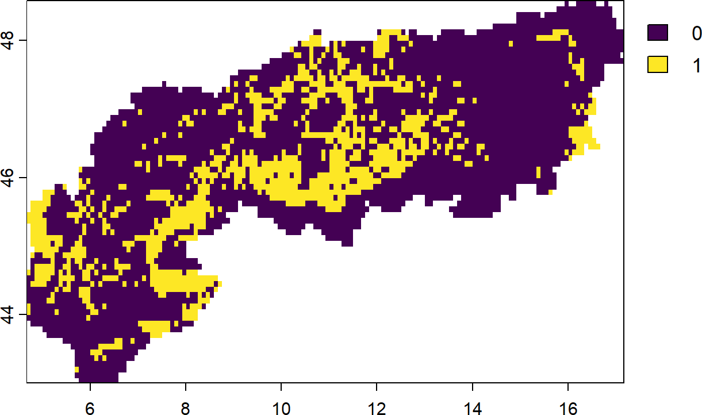
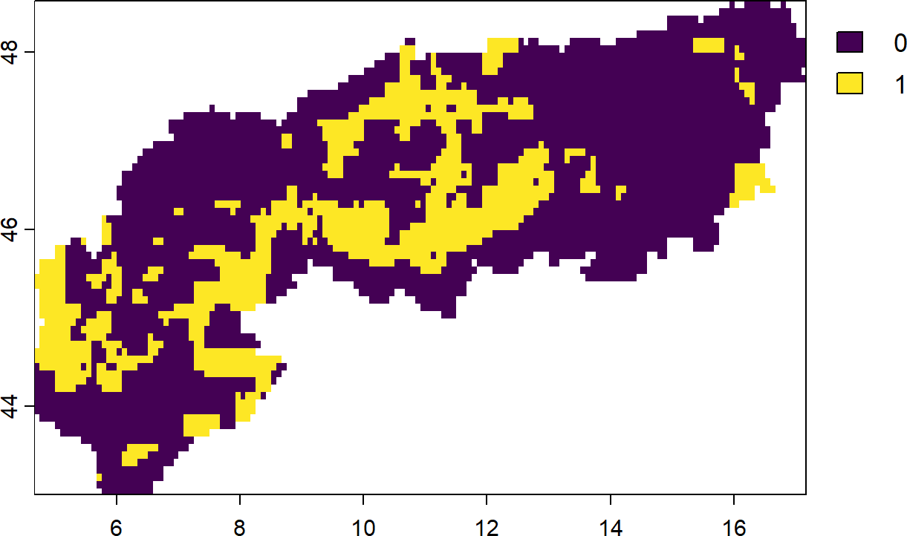

# Crop. Focus on the alps here
alps <- sf::st_read('extdata/boundary_alps/AlpineConvention.shp') |>
sf::st_transform(crs = sf::st_crs(4326))
PU <- PU |> terra::crop(alps) |> terra::mask(alps)
spp <- spp |> terra::crop(alps) |> terra::mask(alps)8 Connectivity
Conservation planning can be used to obtain area-based solutions to identify options for (improved) conservation of species. In reality however many seemingly ‘optimal’ solutions in terms of complementarity (e.g. covering the best areas for conserving selected features) might not work for species that persist only in isolated populations, which are thus more prone to extinction. Here a strategy is not to identify (and conserve) a single site, but manage a network of sites that are ideally as much as possible connected.
What this imply for area-based conservation planning? It means ideally sites are selected in a way that not only maximizes complementarity but also results in compact and/or structurally and functionally connected areas.
The aim of this section is to describe different way of ‘directly’ considering connectivity in area-based conservation planning with prioritizr. For a comprehensive overview on the general principles of considering connectivity in area-based planning we recommend several recent reviews and perspectives (Daigle et al. 2020) (Beger et al. 2022) (Hanson et al. 2022).
Note
Much of the code examples in this section might take quite a bit of time to run and requires knowledge of how to set up a problem formulation. We suggest to try these options only as you are familiar with modifying problem formulations and altering outputs.
For demonstration purposes we focus on the Alpine region for these examples. You can obtain a shapefile of their outline here.
Although by no means comprehensive, we broadly consider four commonly applied but different ways of considering connectivity in prioritzr.
Boundary penalties that prefer larger compared to smaller sites (Ball et al. 2009).
Connectivity penalties that penalize (unconnected) solutions (Alagador et al. 2012).
Connectivity constraints to (hard) constrain solutions to certain criteria such as proximity (Hanson et al. 2022).
Connectivity features such present/future layers or connectivity layers (Kujala et al. 2013).
8.1 Boundary penalties
The inclusion of boundary penalties is one of the oldest and most widely applied ways of forcing a prioritization output (Ball et al. 2009). By setting a boundary length modifier (BLM) or penalty constant, we effectively penalize solutions that result in overly fragmented patches. Since it is a penality it does not fully prevent them however.
Unfortunately, and similar to other penalty values, there are no specific guidelines of what might work or not, so often it might be worth exploring a few options.
As in previous tutorials we first load our data. However as noted above, we focus on the Alpine region only to make this interpretable. To do so we first crop and mask our PU and feature data to the alps.
Now we can create a conservation planning problem for this region.
p <- problem(PU, spp) |>
add_min_set_objective() |>
add_relative_targets(targets = 0.3) |>
add_binary_decisions() |>
add_default_solver()- 1
- A problem with the cropped data (Planning units and features)
- 2
- Using a minimum set operation here.
- 3
- Arbitrary targets of 30% of the feature distribution
- 4
- Binary decisions
- 5
- Use the fastest solver installed/available (usually Gurobi or cbc)

Now lets add some boundary constraints to the same problem.,
# First we precompute the boundary matrix (large matrix of neighbourhoods)
bm <- boundary_matrix(PU)
# Then we rescale it for better performance
bm <- rescale_matrix(bm)
# Now create a new problem using the settings from above, but with a boundary penality
s_blm <- p |>
add_boundary_penalties(penalty = 1e-4, data = bm) |>
solve()- 1
- Specify a boundary penalty. Usually this requires some trial-and-error.

As you can see the solution is effectively more ‘clumped’. But what about the area selected? Do we need more area to get the best complementary solution here?
# calculate costs (sum of area)
dplyr::bind_rows(
eval_cost_summary(p, s),
eval_cost_summary(p, s_blm)
)
# Answer is...?
Performance
Boundary length penalties generally solve faster with simpler objective functions, such as a minimum set objective function.
8.2 Connectivity penalties
Another more direct way to ingest some connectivity into a problem formulation is to use a certain auxillary layer, for example green infrastructure, (inverse) costs of transversal or connectivity estimates run through software like Circuitscape, as linear penalty. When including connectivity estimates as penalties in conservation planning we usually distinguish between symmetric and asymmetric penalties.
8.2.1 Symmetric connectivity penalties
Symmetric connectivity penalties describe information that is non-directional, in other words the same penalties apply when for example a species moves from west to east or from east to west across the study region (see also (Alagador et al. 2012)).
In the following example we again define a minimum set problem as before. We then load a pressure layer (the Human modification index) under the assumption that higher human modification values reduce the (structural) connectivity value of a landscape. Again we require a penalty term and it is advised to carefully calibrate this constant in practice.
# Define a minimum set problem
p <- problem(PU, spp) |>
add_min_set_objective() |>
add_relative_targets(targets = 0.3) |>
add_binary_decisions() |>
add_default_solver()
# Load the Human Modification index and clip to the alps
HM <- rast("extdata/gHM.tif") |> terra::crop(alps) |> terra::mask(alps)
# Now prepare the connectivity matrix and rescale
bm <- connectivity_matrix(PU,HM)
# rescale matrix
bm <- rescale_matrix(bm)
# Update the problem formulation and solve with a small penalty.
s_con1 <- p |>
add_connectivity_penalties(penalty = 1e-4, data = bm) |>
solve()
plot(s_con1)
# It also possible to evaluate the connectivity values via
eval_connectivity_summary(p,s_con1, data = bm)- 1
- This command calculates a cross-product between the Planning unit and a pressure layer
- 2
- Rescaling is usually necessary to achieve better convergence
- 3
- The Penalty constant chosen reflects the magnitude of influence dedicated to this layer.
Influence of penalty values
Try changing the penalty parameter. How do the results change? If you encounter unusual results (all values identical) the reason is often an inappropriate penalty.
In real world example it usually recommended to calibrate such quite parameters so as to ensure realistic outcomes. See this vignette for more information on how to do so.
Another alternative approach could be to not use a separate layer, but constrain the area-based prioritization by some prior knowledge about minimum or maximum distance constraints. For example, one can envisage a case where we know that most species are unlikely to disperse further than 10 km from any selected patch. In this case it can be beneficial to avoid prioritizing such areas for conservation to avoid further fragmentation and possibly extinction of local populations.
Let’s try it out (Note: this can take quite a bit longer to solve):
# Here we precompute a proximity matrix with maximum distance of about ~10km (WGS84 projection)
cm <- proximity_matrix(PU, distance = 0.1)
# rescale boundary data
cm <- rescale_matrix(cm)
# Do one with boundary constraints
s_con2 <- p |>
add_connectivity_penalties(penalty = 1e-4, data = cm) |>
add_cbc_solver(time_limit = 240,first_feasible = TRUE) |>
solve()
plot(s_con2)- 1
- Note the different command compared to before. This calculates proximity constraints.
Tip
There is also a matrix function called ‘adjacency_matrix()’. Can you imagine what this one does?
8.2.2 Asymmetric connectivity penalties
Opposed to symmetric connectivity penalties (Section 8.2.1), asymmetric penalties have some kind of directionality. For example in situations where species can only move down PU such as rivers blocked by a dam, or for planning problems with migration corridors (south to north) ((Beger et al. 2010)). Adding this penalty to a problem penalizes solutions that have low directional connectivity among PU.
# Make a directional dummy layer based on the cell numbers
dummy <- PU
dummy[!is.na(PU)] <- terra::cells(dummy)
# Now prepare the connectivity matrix and rescale
cm <- connectivity_matrix(PU, dummy)
# rescale matrix
cm <- rescale_matrix(cm, max = 1)
# We only use the diagonal for this simple example, thus going north to south
cm <- Matrix::triu(cm)
# Update the problem formulation and solve with a penalty.
s_asc <- p |>
add_asym_connectivity_penalties(penalty = 1, data = cm) |>
solve()
plot(s_asc)- 1
- We again create a connectivity matrix using the dummy cell numbers
- 2
- Rescale and make sure values are from 0 to 1 for better convergence.
- 3
- We take only the diagonal for simplicity. This effectively removes one geographical dimension (top to bottom).
- 4
- Solve the solution. Note the higher penalty for this dummy example.
8.3 Connectivity constraints
So far we have made use of penalties to nudge solutions into to being more connected or less fragmented. Penalties however can not guarantee per se that a solution satisfies the desired criteria for example having only a few rather than many continuous patches. Constraints force a solution to, regardless of the optimality gap used to generate a prioritization, always exhibit the intended characteristics (or being infeasible).
8.3.1 Neighbour constraints
This simply constraint specifies that each selected PU has to have at least X neighbours in the solution.
# Define a problem
p <- problem(PU, spp) |>
add_min_set_objective() |>
add_relative_targets(targets = 0.3) |>
add_binary_decisions() |>
add_default_solver()
# Obtain only solutions with PU that have at least 2 neighbouring PU
s <-
p %>%
add_neighbor_constraints(k = 2) %>%
solve()
plot(s)- 1
- Try changing the k parameter to 3 or 4. What happens?
8.3.2 Contiguity constraints
On the extreme end of the SLOSS (Single large vs several small) debate are single continuous reserves. Such planning solutions can be beneficial for example when the aim is to adequately conserve the most area under large budget constraints. For such cases prioritizr supports so called contiguity constraints, which form a single large reserve instead of multiple.
Contiguity constraints are very time-consuming to solve and an installation of a commercial solver (like Gurobi) is highly advised.
# create problem with added contiguity constraints and solve it
s2 <-
p |>
add_contiguity_constraints() |>
add_relative_targets(targets = 0.1) |>
add_gurobi_solver(time_limit = 2400, first_feasible = TRUE) |>
solve()8.3.3 Linear constraints
Linear constraints are not directly linked to connectivity, but can in theory used for this purpose (and more). Linear constraints simply specify that the solution has to satisfy a criteria, such as for example having at least XX% of area or covering at least YY% of ‘connectivity’ features. They are thus quite similar to including connectivity as a feature (Daigle et al. 2020) (see also below for connectivity features), but are implemented directly as constraints.
For example, in this problem formulation we constrain the solutions to only those that also contain a certain (admittedly) arbitrary amount of ‘greenness’ (quantified by the NDVI).
# Load and clip the ndvi layer
ndvi <- rast("extdata/ndvi.tif") |> crop(alps) |> mask(alps)
# The threshold for linear constraints. We want at least this much!
threshold <- global(ndvi, "sum", na.rm = TRUE)[[1]] * 0.3
# Update the solution.
s3 <-
p |>
add_linear_constraints(
data = ndvi, threshold = threshold, sense = ">="
) |>
solve()
plot(s3)- 1
- We specify a greater/equal sense here. Different directions such < or <= are also possible.
Can you think of a reason why it might be beneficial to modify the input layers beforehand? Consider that it can incurs costs (in terms of area) to select PU as part of the solution.
Tip
Linear constrains are extremely flexible and can be used to constrain priorities into many directions. For example, with them it is easily feasible to obtain a solution that satisfies at least 10% of total area over the studyregion, while maximizing target achievement.
8.4 Connectivity features
Another, relatively straight forward way, to ‘account’ for connectivity is to directly add features representing connectivity per se and ensure that solutions conserve not only the areas a species occurs in but also the area it transverse through. For example (Kujala et al. 2013) considered both current and future projected distributions of species (constrained by dispersal distance) to identify potential stepping stones or refugia in response to climate change. For a comprehensive overview see also the recent work on climate-smart metrics for conservation planning (Buenafe et al. 2023).
As an example here we aim to identify the top ‘priorities’ that account for present as well as future distributions of species in a simplified manner. This approach can certainly be improved further, for example by considering dispersal constraints or weights of present against future distributions (discounting), but illustrates the concept.
budget.area <- round(0.3 * length(cells(PU))) ## 30 percent
# Identify the solution for a maximum coverage problem and contemporary only
s0 <- problem(PU, spp) |>
add_max_features_objective(budget = budget.area) |>
add_relative_targets(targets = 0.3) |>
add_binary_decisions() |>
add_default_solver() |>
solve()
# Now add the future distributions of the species as well as their
spp.list <- list.files(path = "extdata/SpeciesDistributions/", full.names = T, recursive = T, pattern = "tif$")
sppf <- rast(spp.list[grep("rcp85", spp.list)])
# Crop and mask
sppf <- sppf |> terra::crop(alps) |> terra::mask(alps)
# Add to stack
s1 <- problem(PU, c(spp, sppf)) |>
add_max_features_objective(budget = budget.area) |>
add_relative_targets(targets = 0.3) |>
add_binary_decisions() |>
add_default_solver() |>
solve()
# Overlay and compare
comb <- s0+s1 |> as.factor()
levels(comb) <- c("no priority", "current/future only", "current and future")
plot(comb, legend = "bottom")- 1
- Note that we specify identical targets for present/future. Ideally targets are specified by feature rather than flat as done here.
- 2
- Since the decision variable is binary, we can simply sum the result.